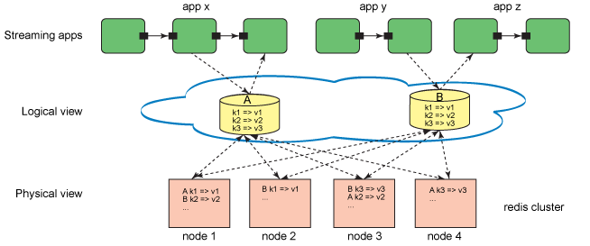

General Information
The Distributed Process Store (DPS) toolkit enables multiple applications running processing elements (PEs) on one or more machines to share application specific state information. The shared information is stored in an external data store. This allows non-fused SPL, C++ and Java operators running on different machines to share information. The following external data stores are supported:
- Redis® versions 2.8.2+, 3.0.x and 3.2.x.
The toolkit consists of a set of native functions that provide access to shared state, and additional locking functionality to provide safe, concurrent access to the shared data. These functions can be used from anywhere inside a Streams application, whether it be SPL code, SPL functions, SPL native functions, C++ primitive operators. They also have counterparts written in Java that can be used from a Java primitive operator. The actual state information is stored separately in the distributed back-end in-memory store which is transparent to the Streams application.
Conceptual Overview
The following diagram provides a conceptual overview of the interaction between the Streams application, the DPS toolkit, and the distributed back-end in-memory store. Each green box represents a processing element (PE) of the application. These interconnected PEs have access to the DPS logical container as well as full access to the data store APIs. In the logical view layer, code abstraction is done to communicate with the back-end in-memory store. Any PE, regardless of whether it originally created the store and populated it with its original contents (if any), can safely access the store (shown in the physical view layer) to save and retrieve contents. To access the store, the PE requires a valid store name or a store handle.

As shown in the figure above, an instance of the DPS accommodates one or more user-created stores. Each store can hold an unlimited number of data items stored as key-value pairs created using any SPL type as a key and any SPL type as a value. Additionally, a DPS instance contains a store factory that can manufacture stores on demand. Similarly, any store can be accessed concurrently by any number of PEs running on different machines. In order to ensure safe access (i.e. store operations do not override each other), each DPS instance contains a lock factory enabling you to create shareable locks for the purpose of locking a store during a critical private operation and then releasing the lock once that critical store operation has completed.
Notes for supported data stores
- Redis 2.8.x: If you have a heavy workload of put/get requests, then using multiple Redis servers may give scaling to improve the overall throughput. You can manually configure and start multiple instances of Redis to listen and run on different ports and/or machines. The DPS toolkit will internally treat these Redis v2.8.x multiple instances as multiple shards and distribute the key-value pairs among those instances to improve performance with increased memory capacity. If you have multiple Redis servers configured, consider using the DPS Time To Live (TTL) APIs, discussed below. This will result in better scalability of your put/get requests than using the APIs that take the user created store id as a function argument. Choose the APIs according to your functional and scaling needs.
- Redis 3.0.x or 3.2.x: If you choose to use these versions to take advantage of the Redis built-in high availability and clustering, fail-over, replication and persistence features, it is important to note that, those new Redis 3.x features may impact the overall performance of reading from and writing data to the Redis cluster nodes.
- Redis 3.2.x servers are by default configured to block connections from remote machines and remote IP addresses other than the loopback (127.0.0.1) address. See the comments in the redis.conf configuration file for more information. This restriction means that if Streams is running on a machine different from the Redis server, you will need to reconfigure and restart the Redis server to accept remote connections. Make the following changes in your redis configuration file:
- Comment out the line bind 127.0.0.1
- Make sure protected-mode is set to no.
- Restart Redis, making sure to specify the path to the modified configuration file.
Toolkit overview
The functions provided by the DPS toolkit are divided into 3 categories:
- User created data stores,
- TTL global store, in which pairs can be configured to expire after a certain time period,
- Distributed lock API
Note: The toolkit provides the aforementioned functionality as native functions that can be used from C++ and SPL applications and through a fully object oriented Java API. The comments below apply regardless of the programming language being used.
User Created Stores
A DPS store is a container in which pairs can be created, retrieved from, updated and deleted. The keys and values must be a SPL primitive type, such as rstring or int32, or a SPL composite type such as a map. You can perform Create, Read, Update, Delete (CRUD) operations simultaneously on numerous stores that you own, share, and manage within the context of one or more Streams applications. You can create your own stores and share application-specific data across multiple Streams processing elements (PEs) and across multiple Streams applications running on one or more machines. The key-value pairs are kept inside each individual user-created stores. Applications can create and use many such user specified stores at the same time. There is also support for running arbitrary one-way data store commands from within your application. See the dpsRunDataStoreCommand() functions. The core functions needed to manage the lifecycle of a DPS store in a SPL application are in the com.ibm.streamsx.store.distributed namespace. These functions allow you to perform operations such as create/get/remove stores, put/get/check key value pairs, iterate over the store, serialize/deserialize stores.
Time to Live (TTL) Store
The toolkit also provides a set of functions for storing key-value pairs that are configured to expire after a certain time period. When the pre-assigned TTL value expires, these data items will be automatically removed from the data store. Key Value pairs stored and obtained using these functions will not belong to any user created stores. Instead, they will be stored at the top level global area of the configured Redis back-end. When applications have a need to put data items with a TTL value and get them back, you can use these functions without having to create individual stores. These functions all have a "TTL" suffix. These ephemeral key value pairs can only be used with the aforementioned functions and cannot be used with any functions that take store name or store id as a function argument.
A non-zero TTL value passed to these functions will automatically remove the key-value pairs at the end of their specified lifetime. A TTL value of zero will keep the key-value pair in the back-end data store forever or until such time as they are removed manually using the dpsRemoveTTL() function.
These functions will return true or false indicating whether the operation succeeded or not. In the case of a false return value, an error code and an error string can be obtained. In the Redis back-end data store, TTL based data items can coexist with other user created stores containing data items that could live forever. Such TTL based APIs only provide a limited set of functions (put, get, has, and remove), but at the same time will have a slightly lower overhead than the feature rich non-TTL based functions.
Distributed Locking API
The DPS Toolkit also provides the following distributed locking functions which can be used for accessing stores from multiple threads and multiple processes safely without overriding each other. This is achieved using a trust based cooperative locking scheme to gain exclusive access into the stores for performing a set of transaction based store activities.
- Developing and running applications that use the DPS Toolkit
-
- Version
- 3.2.1
- Required Product Version
- 4.0.0.0
Namespaces
- com.ibm.streamsx.lock.distributed
- Functions
-
- com.ibm.streamsx.store.distributed
- Operators
-
- Functions
-
- dpsBase64Decode(rstring, rstring)
- dpsBase64Encode(rstring, rstring)
- dpsBeginIteration(uint64, uint64)
- dpsClear(uint64, uint64)
- dpsCreateOrGetStore(rstring, T1, T2, uint64)
- dpsCreateStore(rstring, T1, T2, uint64)
- dpsDeserialize(uint64, blob, T1, T2, uint64)
- dpsEndIteration(uint64, uint64, uint64)
- dpsFindStore(rstring, uint64)
- dpsGet(uint64, T1, T2, uint64)
- dpsGetDetailsAboutThisMachine(rstring, rstring, rstring)
- dpsGetLastErrorCodeTTL()
- dpsGetLastErrorStringTTL()
- dpsGetLastStoreErrorCode()
- dpsGetLastStoreErrorString()
- dpsGetNext(uint64, uint64, T1, T2, uint64)
- dpsGetNoSqlDbProductName()
- dpsGetSafe(uint64, T1, T2, uint64)
- dpsGetSplTypeNameForKey(uint64)
- dpsGetSplTypeNameForValue(uint64)
- dpsGetStoreName(uint64)
- dpsGetTTL(T1, T2, uint64)
- dpsGetTTL(T1, T2, uint64, boolean, boolean)
- dpsHas(uint64, T1, uint64)
- dpsHasTTL(T1, uint64)
- dpsHasTTL(T1, uint64, boolean)
- dpsIsConnected()
- dpsPersist(uint64)
- dpsPut(uint64, T1, T2, uint64)
- dpsPutSafe(uint64, T1, T2, uint64)
- dpsPutTTL(T1, T2, uint32, uint64)
- dpsPutTTL(T1, T2, uint32, uint64, boolean, boolean)
- dpsPutTTL(T1, T2, uint32, uint64, uint32, uint32, boolean, boolean)
- dpsReconnect()
- dpsRemove(uint64, T1, uint64)
- dpsRemoveStore(uint64, uint64)
- dpsRemoveTTL(T1, uint64)
- dpsRemoveTTL(T1, uint64, boolean)
- dpsRunDataStoreCommand(list<rstring>, rstring, uint64)
- dpsRunDataStoreCommand(rstring, uint64)
- dpsRunDataStoreCommand(uint32, rstring, rstring, rstring, rstring, rstring, rstring, uint64)
- dpsSerialize(uint64, blob, T1, T2, uint64)
- dpsSetConfigFile(rstring)
- dpsSize(uint64, uint64)
- initializeDpsNoException()